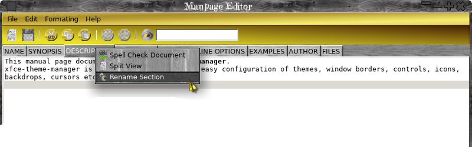

Tab Menu
The Tab Menu allows you to change the section name etc.
The Tab Menu allows you to change the section name etc.
New - creates a new manpage.
New Section - adds a section to the manpage.
New Editor - would you believe opens a new editor!
Open - opens a manpageeditor file (.mpz).
Export - exports to manpage format, sections are created in the order they are displayed in the editor,
just drag the tabs to reorder. Export exports the man page to the same folder as the source file and names it as the lowercase name in properties
and appends the section number.
Export As - allows you to select folder and file for the exported page. Properties set the main properties for the page.
Delete section does what it says, this can not be undone! so save first.
Import Man Page - allows you to manually select a manpage to import.
Import System Manpage - allows you to just type the name of the manpage that you want and optionally select
a manpage section, like so:
Save/Save As/Print/Quit and Close are standard.
Pretty standard the entry box is a Live search just start typing, press enter to go to the next match and shift for the previous.
Self explanatory mostly Use Underline uses underlining in the GUI to represent italic which is the same as most terminals.
The header and footer displayed in the man page like so:
Simple text formatting is done via the 'Formatting' menu just select a piece of text and select bold/italic or clear,
italic text tends to be shown in the terminal as underlined, this can be set in the prefs.
See the example file in PREFIX/share/ManPageEditor/examples.
Write a proper help file.
Add proper formatting instead of using text based tags --> Mostly done need to add stuff like indents and paragraphs.
Add more templates and template folder.
Add optional zipping up of man pages.
Add preview option.
Add import manpage.
Make a proper icon.
Add a mime type for documents.
Add document icon.
Your help in the translation of the application into other languages is welcome!